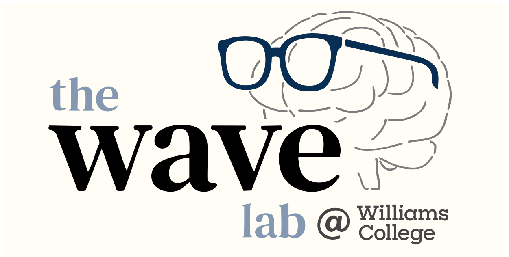

About the Lab
Welcome to the Wong Attention Vision & Encoding (WAVE) Lab!
Our lab explores visual perception and cognition — investigating the mental processes that underlie how we take raw visual input from the world (a mess of lines and colors) and make sense of it (e.g. forming representations of "objects" and "agents"), guiding our everyday function.
In short, our research delves into the (often) surprising answers to questions such as: "What do we actually see?" and "How do we parse the world into meaningful mental representations?"
Lab News
October 2025:
Excited to welcome Eva Liss, freshman, to the lab! She's powering through papers, and getting immersed into the world of cognitive psychology!
September 2025:
Neel Verma, junior, joins the lab! He's hit the ground running with brainstorming experiment ideas already, and is diving into code.
July 2025:
The WAVE Lab officially begins operation on campus, located in Wachenheim Science Center! Now recruiting undergraduate research assistants to begin in either Fall 2024 or Spring 2025. Learn more on our Join Us page.
July 2025:
The WAVE Lab website has been setup! We are excited to get the lab started and to get to know all the students (particularly in the classes that Dr. Wong will be teaching, Intro Psych and 221 Cog Psych).
Interested in joining the lab? Check out this page for more information.